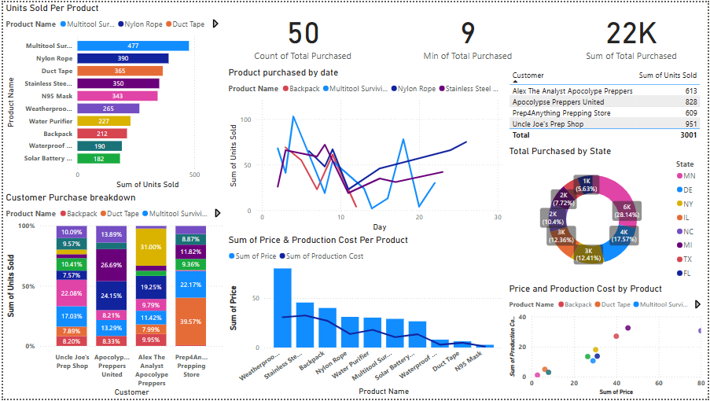

An interactive Power BI dashboard analyzing sales data across four prepper-supply retailers — covering product performance, customer behavior, pricing, and regional distribution.
This dashboard pulls together transaction-level sales data from four prepper-supply stores — Alex The Analyst Apocalypse Preppers, Apocalypse Preppers United, Prep4Anything Prepping Store, and Uncle Joe's Prep Shop — to understand which products sell best, how purchasing differs by store, and how pricing compares to production cost across the catalog.

The Multitool Survival Knife was the top-selling product overall with 477 units sold, followed by Nylon Rope (390) and Duct Tape (365) — practical, low-cost essentials outsold higher-ticket gear like the Solar Battery Flashlight (182) and Backpacks (212).
Of the 3,001 total units sold, Uncle Joe's Prep Shop accounted for 951 — about 32% of all sales — narrowly ahead of Apocalypse Preppers United (828). Alex The Analyst Apocalypse Preppers and Prep4Anything Prepping Store followed closely behind, at 613 and 609 respectively.
Minnesota led all states with roughly 6,000 in purchases, followed by Delaware (~4,000) and New York (~3,000) — together accounting for a significant share of total sales volume.
[ optional: add a sentence on which products had the widest gap between price and production cost, if worth calling out ]
MOCKUP — fill in bracketed placeholders before publishing